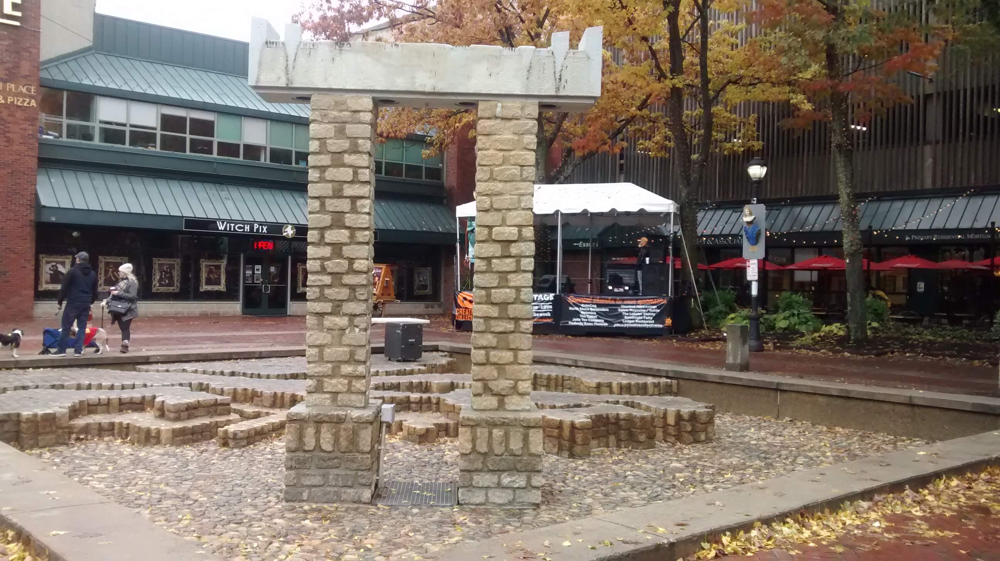
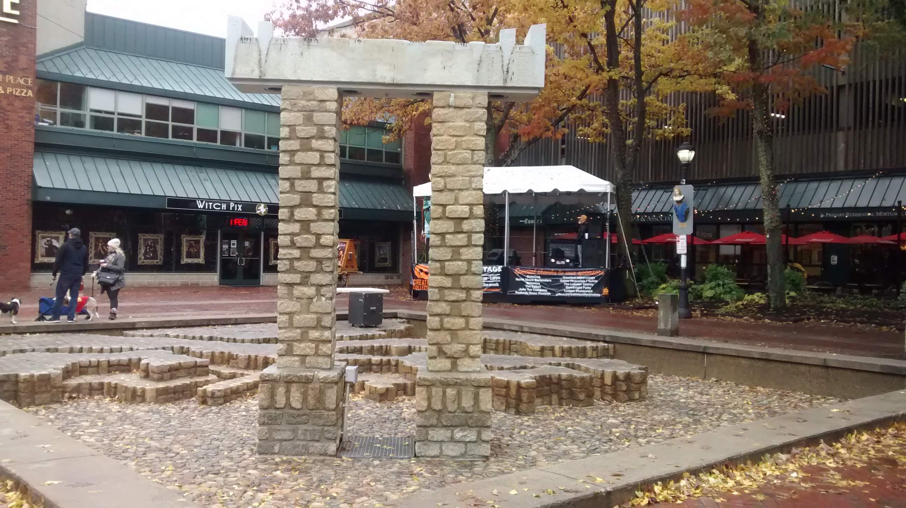
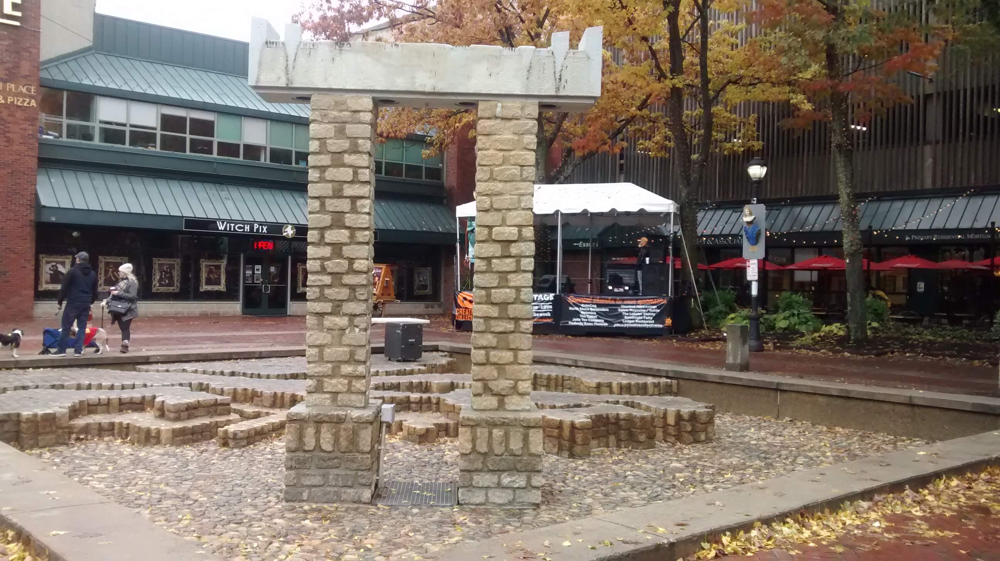

If you follow Neil Cicierega to some degree, you probably have seen his great short The 50 States Nightmares. If you haven't, you should watch it now.
Because they don't exactly have a massive budget, it was all filmed in the beautiful town of Salem, MA. I'm relatively local, so I thought that with the help of Google Maps and my brain how many spots I could pick out. This map marks all the ones I found. It was, originally, a fun thought exercise.
10/28/2018: I went on a trip to the Peabody Essex museum with my pal AJ and figured, while we were in town, we should see what state locations we could spot. Here's the ones we found.
| [Opening image] |
Arkansas |
Florida [no nightmare] |
| Idaho |
Illinois |
Indiana |
| Maine |
Massachusetts |
Michigan |
| Nebraska |
New Hampshire |
New Mexico |
| Ohio |
Pennsylvania |
South Carolina |
States found but not photographed:
Final count:
|
19/50 states |
|---|
Not bad! Another trip, this time up to Salem Willows, might be in order to fill in more gaps. If I ever get around to that, I'll be sure to let you know right here.